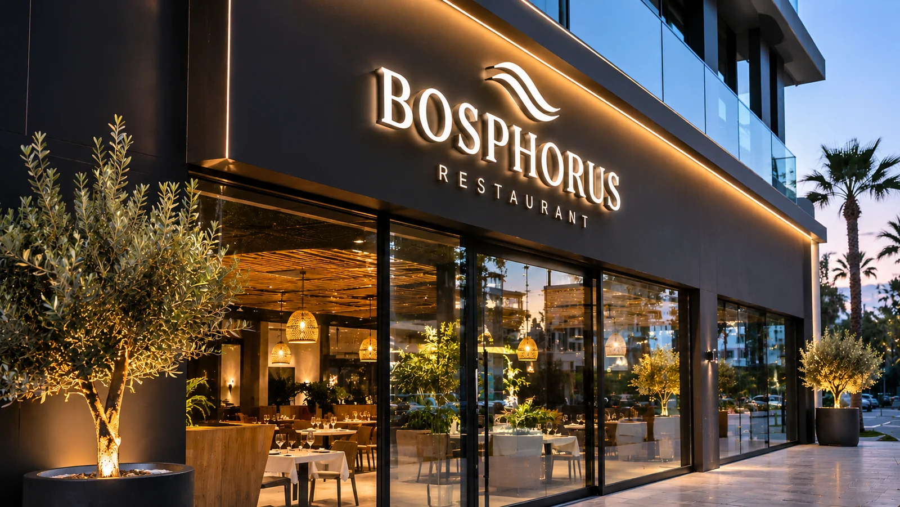
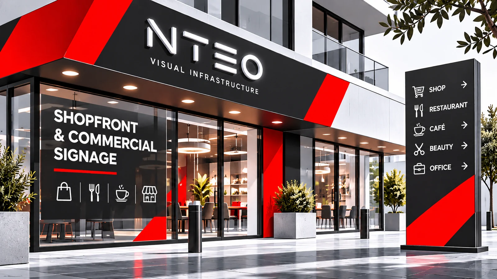
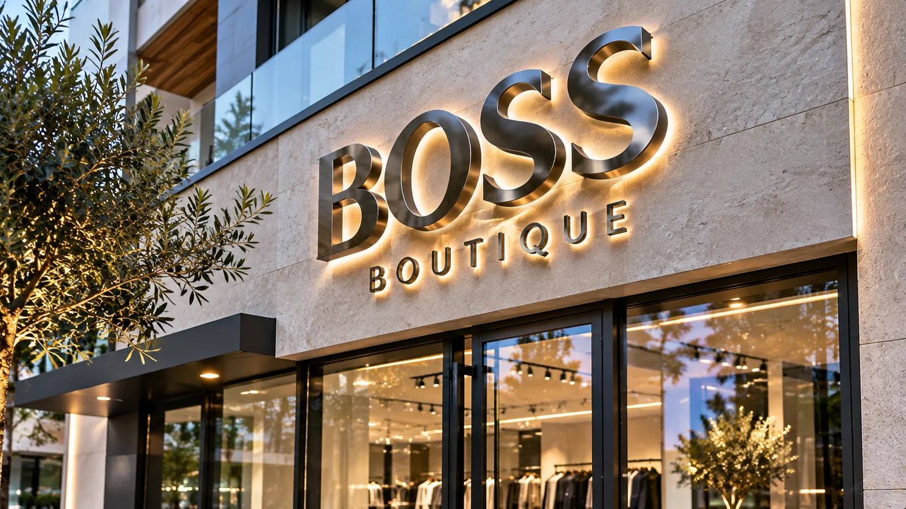
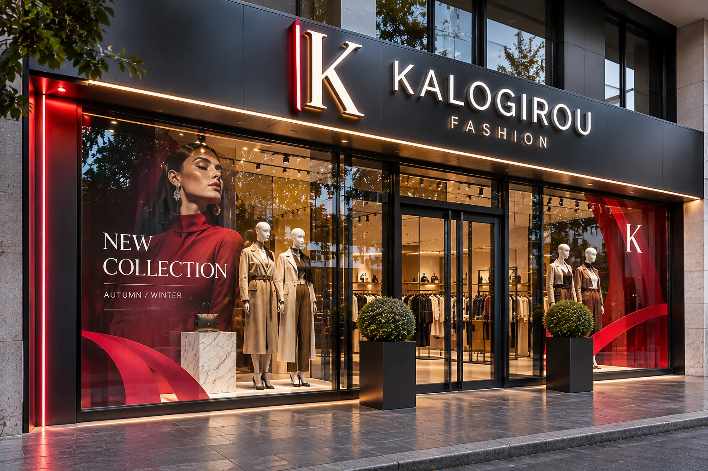
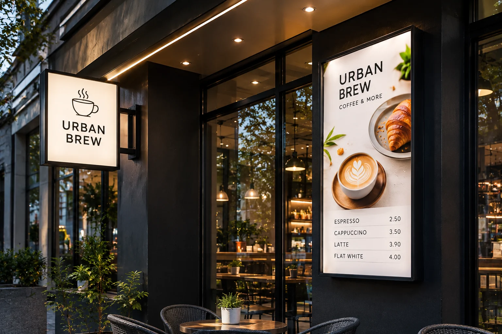
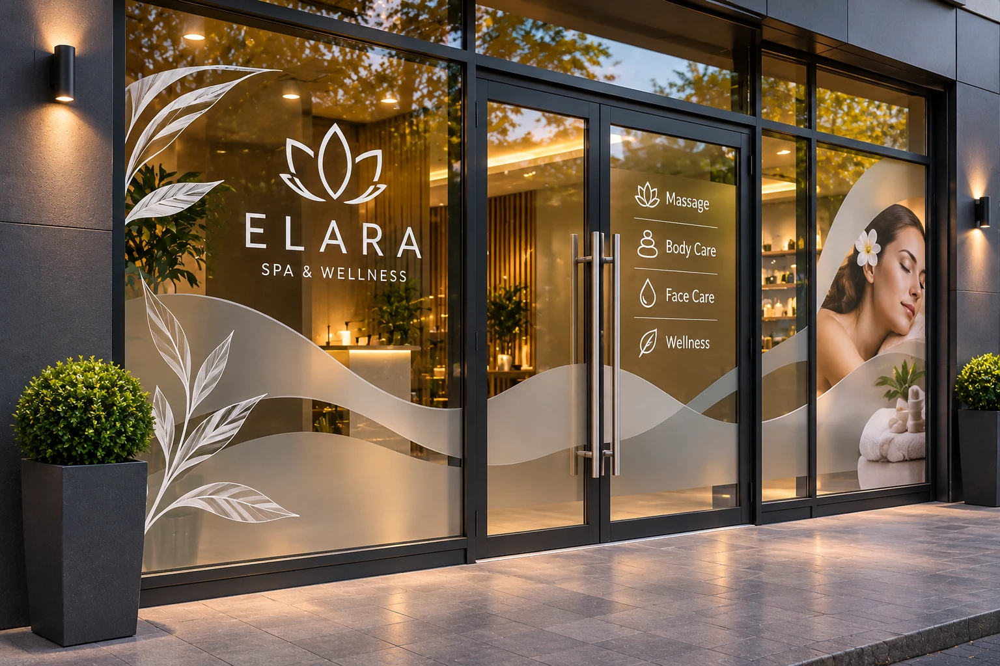
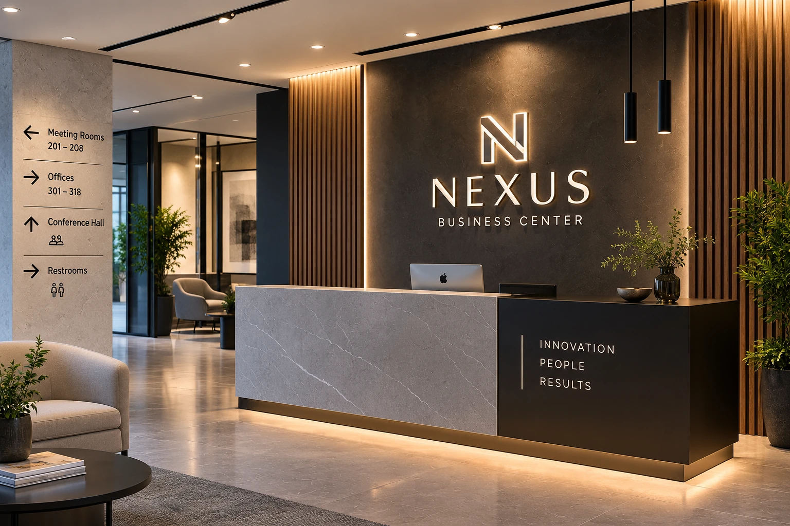
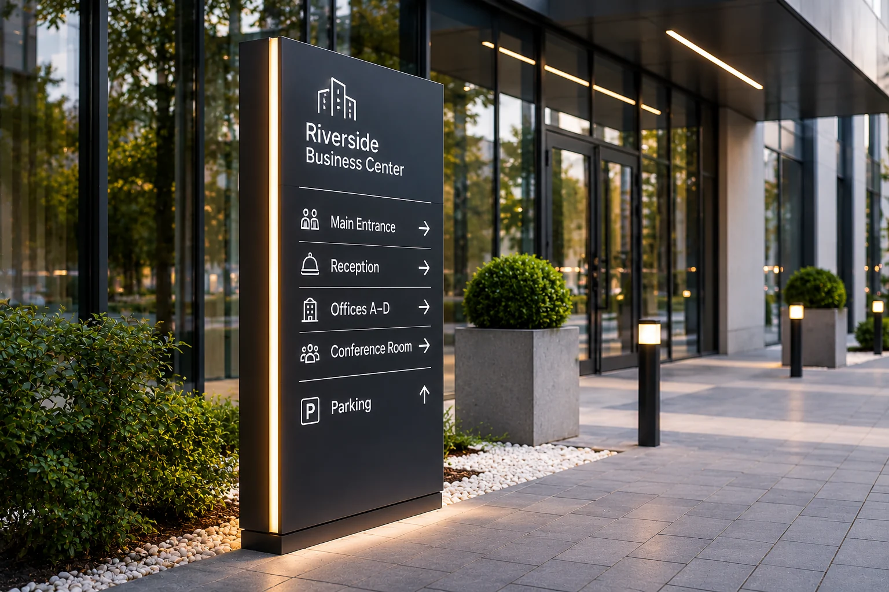

01 / ILLUMINATED SIGNS
Световые вывески
Объёмные буквы с внутренней LED-подсветкой, контражурное свечение, световые панели и вывески для магазинов, ресторанов, кафе и офисов.
Обсудить услугу ↗
NTEO / SHOPFRONT & COMMERCIAL SIGNAGE / CYPRUS
Проектируем и производим вывески и визуальное оформление для магазинов, ресторанов, кафе, салонов, офисов и коммерческих зданий. Объёмные буквы, световые короба, оформление фасадов и витрин, интерьерный брендинг и наружные указатели — от идеи и макета до готового изделия.

NTEO / DESIGN · PRODUCTION · SIGNAGE
Вывеска помогает найти компанию, оформление витрины привлекает внимание прохожих, а продуманная входная группа формирует цельный образ бизнеса. Поэтому мы рассматриваем коммерческое оформление как единую систему: согласуем внешний вид вывески с фасадом, стеклом, материалами и интерьером.
NTEO производит световые и несветовые вывески, объёмные буквы, логотипы, световые короба, витринную графику, брендированные стойки ресепшена и наружные указатели. Можно заказать отдельный элемент или обсудить несколько взаимосвязанных зон одного объекта. Состав работ, материалы, сроки, доставка и монтаж уточняются по проекту.
01 / УСЛУГИ NTEO
Семь направлений объединяют наружную рекламу, оформление торгового фасада, стеклянных поверхностей и коммерческих интерьеров.

Объёмные буквы с внутренней LED-подсветкой, контражурное свечение, световые панели и вывески для магазинов, ресторанов, кафе и офисов.
Обсудить услугу ↗
Отдельные буквы и фирменные знаки из акрила, алюминия и металла: лицевое свечение, контражурная подсветка, дистанционные крепления и декоративная отделка.
Обсудить услугу ↗
Комплексное оформление торгового фасада: фирменная вывеска, панели и облицовка, входная группа, витринная графика и единая визуальная концепция.
Обсудить услугу ↗
Настенные и консольные световые короба, тонкие LED-панели, меню-борды и рекламные лайтбоксы со сменной печатной графикой.
Обсудить услугу ↗
Полноцветная графика, перфорированная и матовая плёнка, декоративные элементы, логотипы и информационные надписи на стекле.
Обсудить услугу ↗
Брендированные стойки ресепшена, логотипы на стенах, интерьерные панели, декоративная графика и навигационные элементы для коммерческих пространств.
Обсудить услугу ↗
Компактные отдельно стоящие указатели, навигационные панели, обозначения входов и парковок для бизнес-центров, магазинов и коммерческих объектов.
Обсудить услугу ↗02 / МАТЕРИАЛЫ И ТЕХНОЛОГИИ
Подбираем конструкцию и отделку с учётом размера, места установки, освещения, поверхности и условий эксплуатации.
Лицевые панели, объёмные буквы, световые элементы и интерьерные логотипы.
Корпуса букв, панели, кронштейны, декоративные элементы и прочные наружные конструкции.
Фасадные основы, информационные панели, подложки и элементы оформления входной группы.
Внутренняя подсветка букв, контражурное свечение, световые короба и панели.
Полноцветная и плоттерная графика, матовые покрытия, логотипы и оформление стекла.
Постеры, меню, сменные изображения для лайтбоксов и рекламные панели.
03 / ПРОЦЕСС
Согласуем детали до производства, чтобы конструкция, графика и место установки соответствовали задаче.
Уточняем адрес, тип бизнеса, размеры фасада, поверхности и желаемый результат.
Подбираем формат, материалы, подсветку, цвет и способ крепления.
Изготавливаем согласованные буквы, панели, короба и печатную графику.
Доставку, доступ на объект и монтаж согласуем отдельно по месту и объёму.
04 / ГЕОГРАФИЯ РАБОТ
NTEO принимает запросы на изготовление коммерческих вывесок, оформление фасадов и витрин, интерьерный брендинг и наружные указатели в Лимассоле, Пафосе, Ларнаке, Никосии, Айя-Напе, Протарасе и близлежащих населённых пунктах. Возможность выезда, доставки и монтажа подтверждаем индивидуально с учётом адреса, объёма и графика проекта.
NTEO / CYPRUS
Отправьте фотографию фасада или краткое описание задачи. Уточним размеры, материалы, конструкцию и возможный формат выполнения работ.
05 / ДЛЯ КОГО
Подбираем визуальное оформление под формат бизнеса, архитектуру здания и задачи конкретного пространства.
Фасадные вывески, объёмные буквы, оформление витрин, входных групп и рекламных панелей.
Световые короба, меню-лайтбоксы, вывески, витринная графика и навигация для гостей.
Ресепшены, интерьерные логотипы, указатели, таблички и оформление клиентских зон.
06 / ОБСУДИМ ВАШ ПРОЕКТ
Расскажите, что нужно оформить и где находится объект. Можно приложить фотографию фасада, витрины или интерьера, указать примерные размеры и желаемый срок. Мы уточним детали и подготовим предложение.
Предпочитаете сначала поговорить? Обсудить проект в WhatsApp · +357 97 587065
07 / FAQ
Да. Можно обсудить несветовые буквы и логотипы из акрила, металла, алюминия и других подходящих материалов.
Рассматриваем объёмные буквы с внутренней LED-подсветкой, контражурное свечение, световые короба и панели. Конструкция зависит от размеров, места установки и требований проекта.
Да. Для стеклянных поверхностей можно использовать виниловую графику, матовые и перфорированные плёнки, декоративные элементы и информационные надписи.
Да. Можно объединить вывеску, фасадные панели, входную группу, оформление витрин и наружные указатели в одну визуальную концепцию.
Да. Обсуждаем настенные и консольные световые короба, панели и лайтбоксы со сменной печатной графикой.
Принимаем запросы из Лимассола, Пафоса, Ларнаки, Никосии, Айя-Напы, Протараса, Паралимни и других близлежащих населённых пунктов. Доставку и монтаж подтверждаем по конкретному адресу.
NTEO / SHOPFRONT & COMMERCIAL SIGNAGE / CYPRUS
NTEO предлагает изготовление вывесок и оформление коммерческих помещений на Кипре для магазинов, бутиков, кафе, ресторанов, салонов, офисов и других объектов бизнеса. В зависимости от задачи производим световые вывески, объёмные буквы и логотипы, световые короба, рекламные панели, фасадные элементы и наружные указатели. Для торговых точек разрабатываем оформление витрин и входных групп с использованием печатной и виниловой графики.
Отдельное направление — интерьерный брендинг коммерческих пространств. Это оформление стойки ресепшена, логотипы на стенах, декоративные панели, таблички и навигационные элементы. Материалы подбираются по месту установки: акрил, алюминий, металл, композитные панели, ПВХ, LED-модули, виниловые плёнки и печатная графика. Возможность подсветки, крепления, доставки и монтажа обсуждается при расчёте проекта.
Заказать световую вывеску, объёмные буквы, оформление фасада магазина или витрины можно в Лимассоле, Пафосе, Ларнаке, Никосии, Айя-Напе, Протарасе, Паралимни, Гермасойе, Пейе, Ороклини, Арадиппу и Полисе. NTEO принимает запросы на коммерческое оформление по этим городам и близлежащим районам; выезд на объект и монтаж подтверждаются индивидуально.
Если вы открываете новый магазин, обновляете фасад ресторана или хотите привести вывеску, витрину и интерьер к единому стилю, отправьте фотографию объекта и краткое описание задачи. NTEO поможет определить формат изготовления и подготовить предложение по согласованным размерам, материалам и срокам.